Codespaces で C 言語を始める¶
このページでは、GitHub Codespaces（ギットハブ・コードスペース）を使って C 言語のプログラムを書いて実行する方法を説明します。Codespaces を使うと、パソコンにコンパイラやエディタをインストールしなくても、Web ブラウザ上で Visual Studio Code（ビジュアルスタジオ・コード）に近い開発環境を使えます。
| デバイス | 対応状況 |
|---|---|
| Windows | ✅ |
| macOS | ✅ |
| Ubuntu | ✅ |
| iPad | ✅ |
| Chrome OS | ✅ |
| Android タブレット | ✅ |
使うものは次の 2 つです。
| ソフトウェア・サービス | 用途 |
|---|---|
| GitHub Codespaces | Web ブラウザ上で開発環境を動かす |
| GCC | C 言語のコードをコンパイルする |
1. Codespaces とは¶
Codespaces は、GitHub が提供するクラウド上の開発環境です。Web ブラウザから Visual Studio Code に近い画面を開き、ターミナルでコマンドを実行できます。
Codespaces では、作業用の Linux 環境がクラウド上に作成されます。この資料では、その Linux 環境の中で gcc を使って C 言語のプログラムをコンパイルします。
注意点¶
- GitHub アカウントが必要です
- Codespaces の利用には、時間や保存容量の制限があります
2. GitHub にログインする¶
- GitHub を開きます
- GitHub アカウントでログインします
アカウントを持っていない場合は、GitHub の画面からアカウントを作成します。
3. 作業用リポジトリを作る¶
C 言語のファイルを保存するために、GitHub 上に作業用リポジトリを作ります。
- GitHub 画面右上の + を押します
- New repository（新しいリポジトリ）を選びます
- Repository name（リポジトリ名）に
c-practiceと入力します（名前は任意） - Choose visibility（Web 上で公開するかどうか）は Private（非公開）を選びます
- 緑色の Create repository ボタンを押します
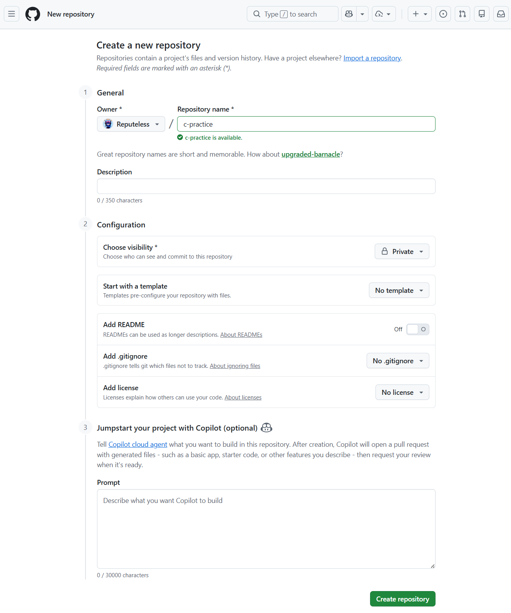
4. Codespace を作成する¶
次のようなスタート画面が表示されるので、Start coding with Codespaces 欄にある Create a codespace を押します。
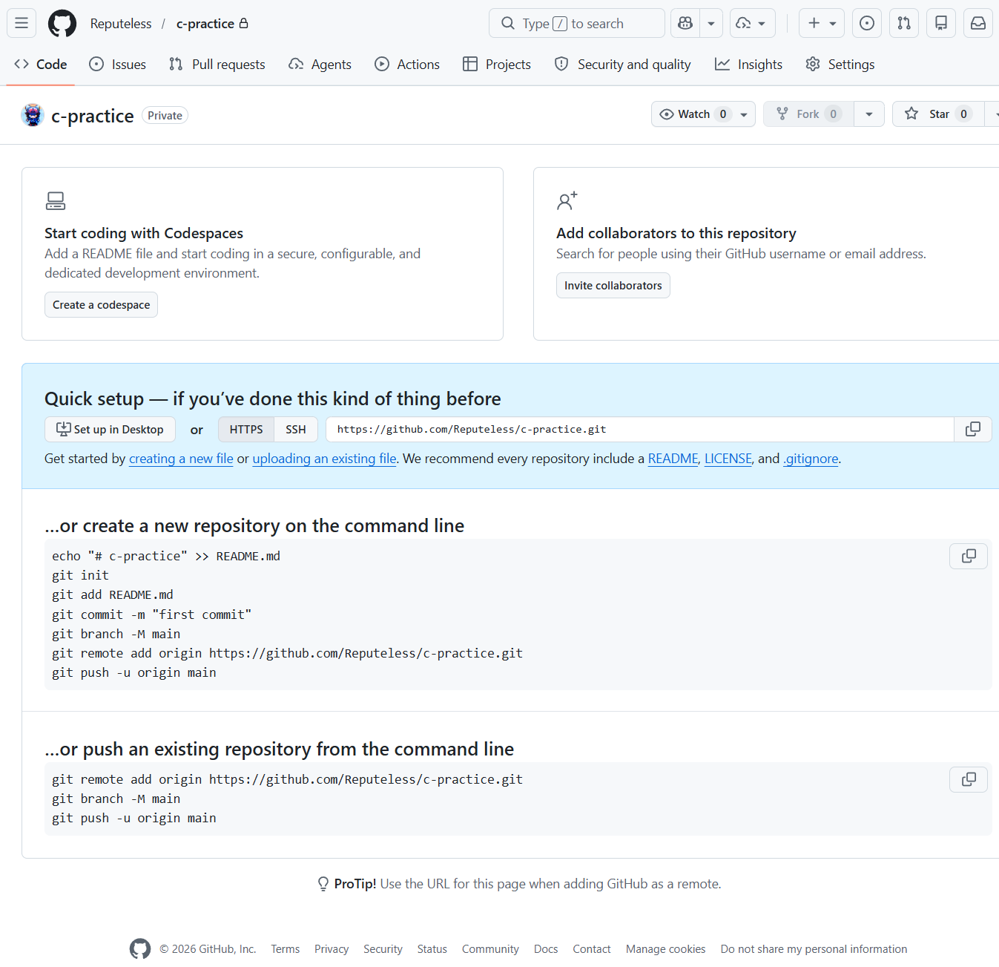
- 緑色の Create new codespace ボタンを押します
- Codespace の準備が終わるまで待ちます
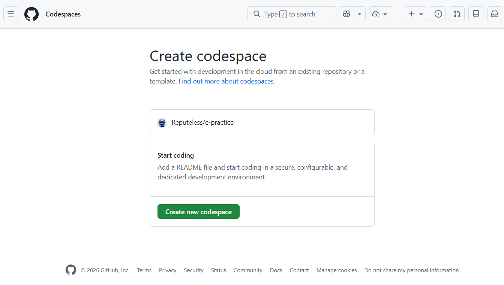
準備が終わると、Web ブラウザ上に Visual Studio Code に似た画面が表示されます。
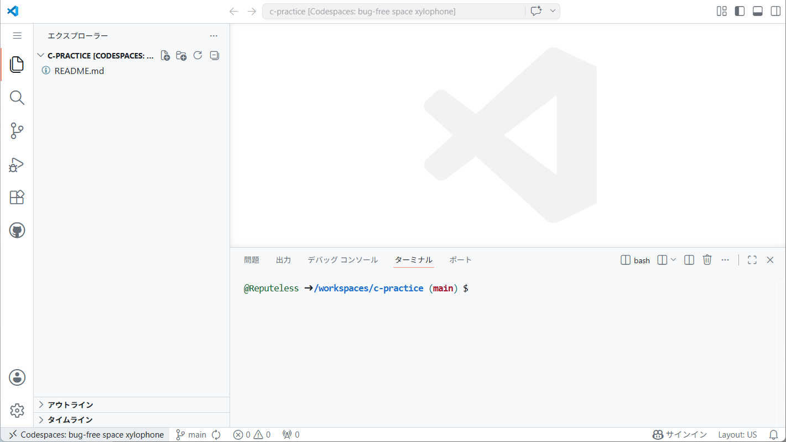
もし Codespaces の画面下にターミナルが表示されていない場合は、左側の （メニュー）から「表示」→「ターミナル」を選びます。
5. GCC が使えるか確認する¶
ターミナルでは、Linux のコマンドを実行できます。
標準の Codespaces 環境では、C 言語のコードをコンパイルするための gcc（ジーシーシー）というコマンドが使えます。
ターミナルで次のコマンドを実行します。
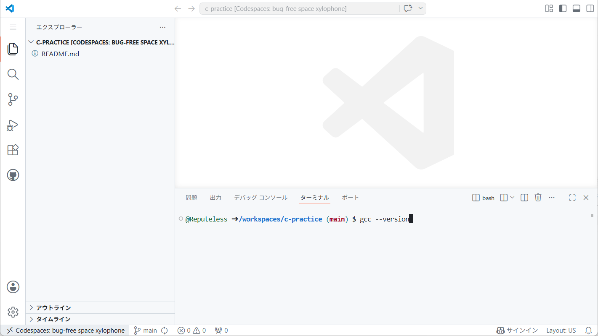
次のように、バージョン情報が表示されれば準備完了です。
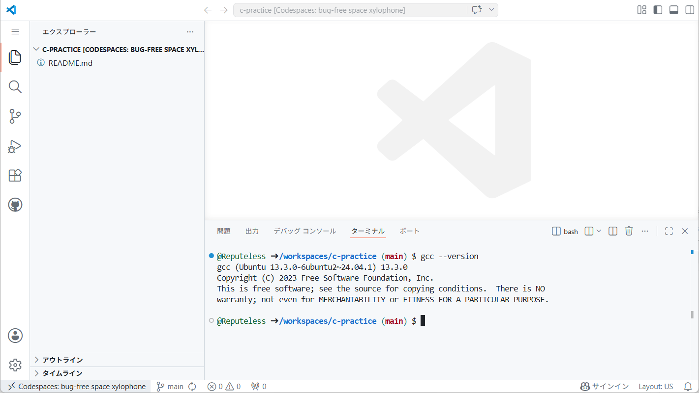
GCC 13 では、コンパイル時に -std=c2x を指定します。GCC 14 以降の場合は、-std=c23 を指定できます。
6. C/C++ 拡張機能をインストールする¶
Visual Studio Code で C 言語のコードを扱いやすくするために、C/C++ 拡張機能をインストールします。
- 左側の「拡張機能」アイコン をクリックします
- 検索欄に
C/C++と入力します
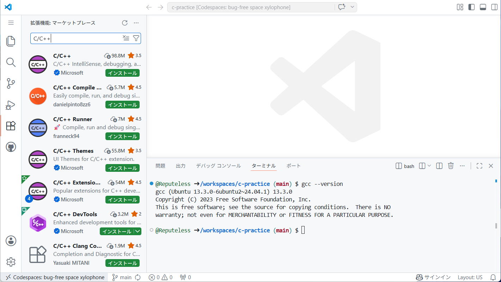
- Microsoft の「C/C++」または「C/C++ Extension Pack」を選択します（どちらを選んでも構いません。後者はいくつか追加の拡張機能が含まれています）
- 「インストール」を押します
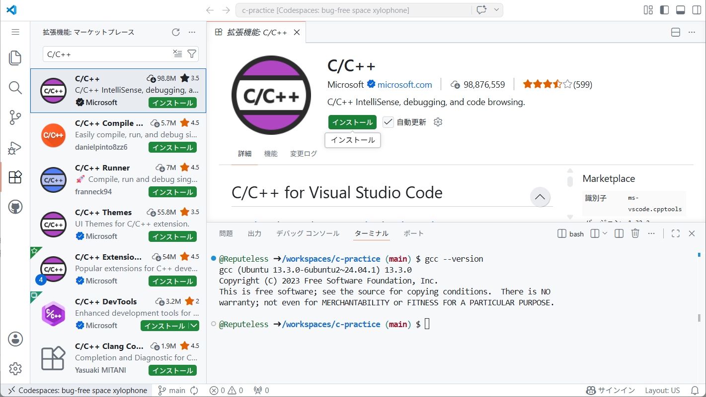
7. 最初の C プログラムを書く¶
画面左側のエクスプローラーで、hello.c という名前のファイルを作成します。
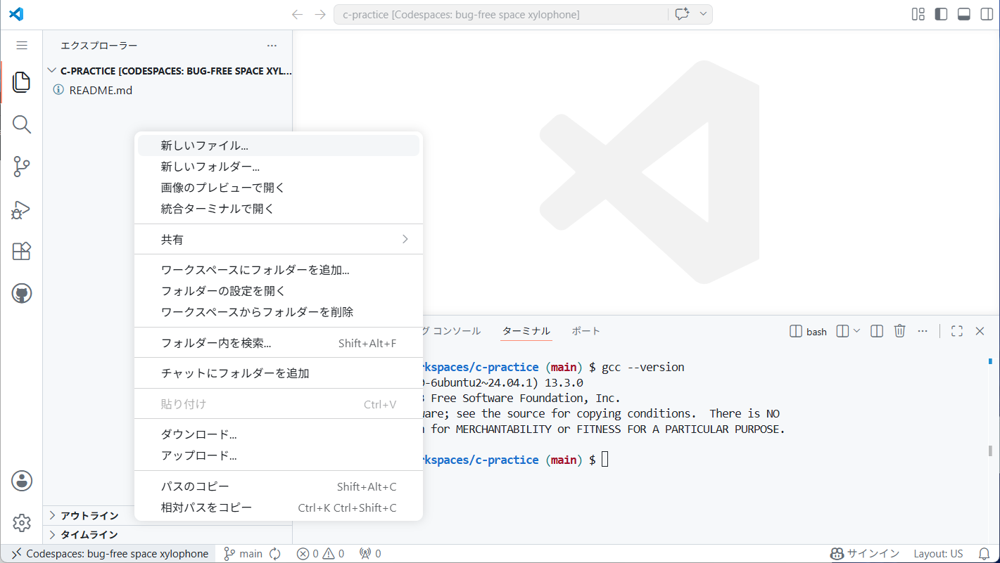
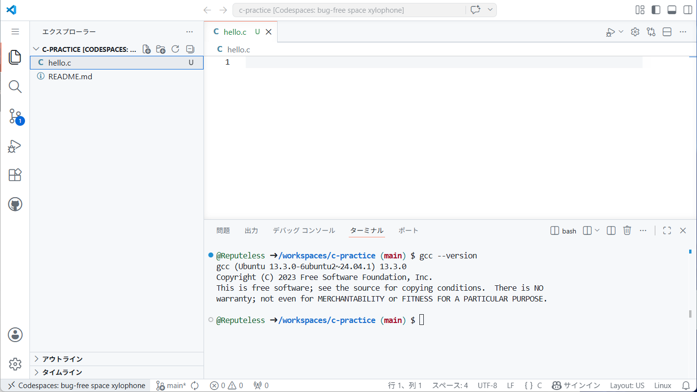
hello.c に、次のコードを書いてみましょう。
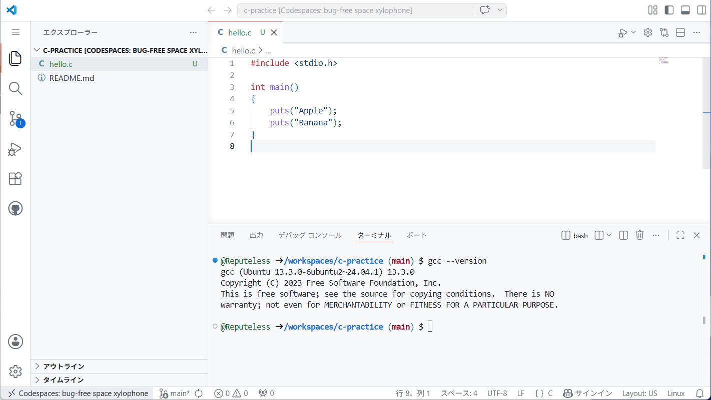
このコードが、画面に Apple と Banana を表示するプログラムになります。
8. コンパイルして実行する¶
ターミナルで次のコマンドを入力して、プログラムをコンパイルします。
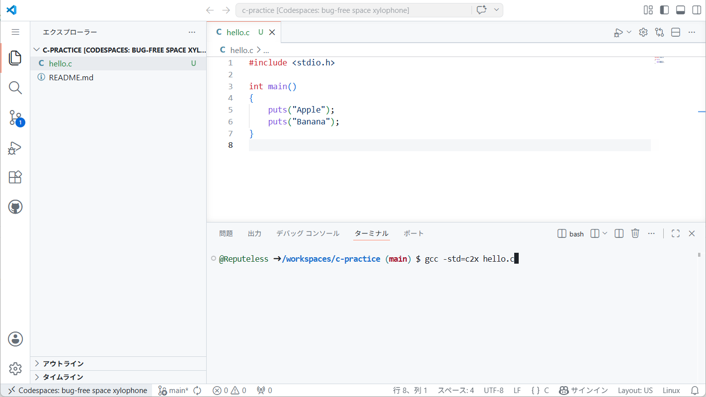
コンパイルに成功すると、a.out という実行ファイルが作られます。エクスプローラー上でも a.out を確認できます。
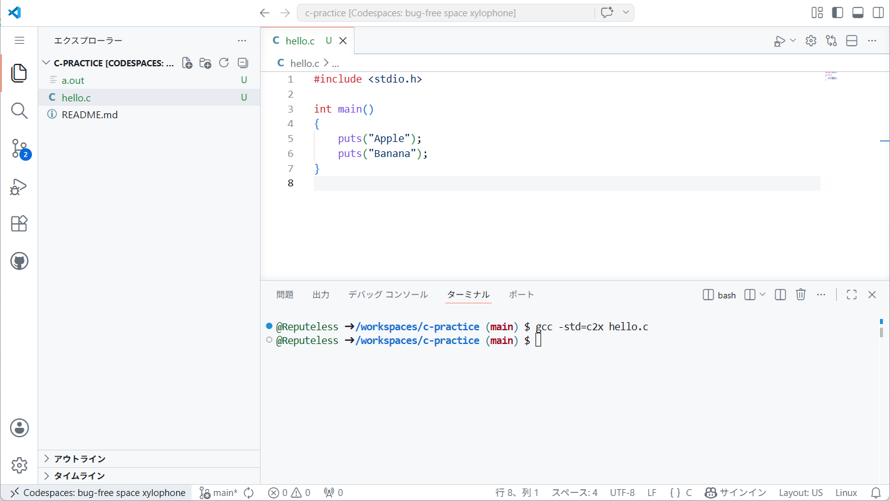
次のコマンドで実行します。
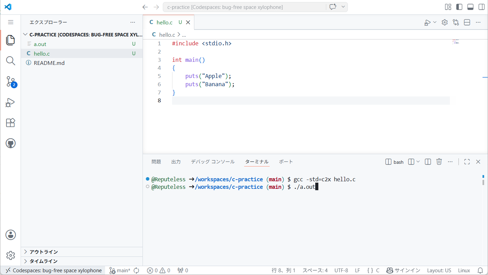
ターミナル内に次のように表示されれば成功です。
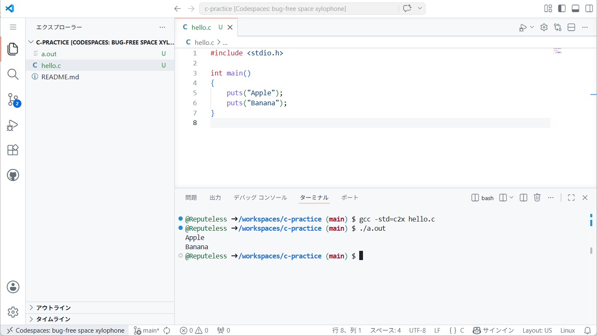
9. 入力を扱うプログラムを実行する¶
次のプログラムは、商品の価格と支払金額を入力し、おつりを計算します。
hello.c の内容を次のコードに書き換えて保存します。
#include <stdio.h>
int main()
{
printf("商品の価格（円）を入力してください >\n");
int price;
scanf("%d", &price);
printf("支払った金額（円）を入力してください >\n");
int payment;
scanf("%d", &payment);
int change = payment - price;
if (change < 0)
{
puts("支払金額が不足しています");
}
else
{
printf("おつり: %d 円\n", change);
}
}
コンパイルします。
実行します。
実行中に入力を求められたら、数字を入力して Enter キーを押します。
Codespaces のターミナルでは、実行中のプログラムに対してキーボードから直接入力できます。
10. bool の赤波線を消す¶
C 言語のコードで bool 型（第 9 章）を使うと、次のようにエディタ上で赤い波線が表示されることがあります。これはエディタの設定が C23 ではなく C17 になっているためです。

解決する手順は次のとおりです。
- エクスプローラーで
hello.cと同じ階層に.vscodeという名前のフォルダを作ります - その中に
c_cpp_properties.jsonという名前のファイルを作ります c_cpp_properties.jsonに次の内容を書いて保存します
{
"configurations": [
{
"name": "Linux",
"compilerPath": "/usr/bin/gcc",
"intelliSenseMode": "linux-gcc-x64",
"cStandard": "c23"
}
],
"version": 4
}
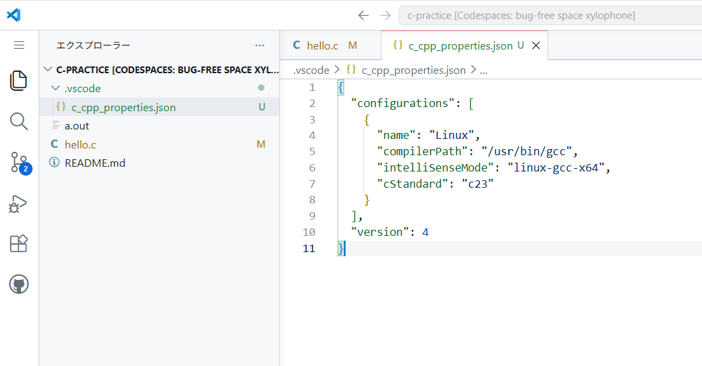
これで、エディタが C23 に対応するようになり、bool の赤い波線が消えます。
11. 書いたコードを保存する¶
Codespaces 内で作成したファイルは、Codespace の中に保存されます。GitHub のリポジトリにも保存したい場合は、変更をコミットします。
- 左側の「ソース管理」アイコンをクリックします
- メッセージ欄に
Add hello.cのような、変更内容を説明するメッセージを入力します - コミット を押します
- 変更の同期 を押します
コミットとプッシュが完了すると、GitHub のリポジトリページにも hello.c が表示されます。
12. Codespace を停止する・作業を再開する¶
Codespace の毎月の無料枠を使い切り、利用制限がかからないようにするために、使い終わった Codespace は停止しておくことをおすすめします。
https://github.com/codespaces から Codespace を停止できます。
停止した Codespace は、同じページから再開できます。再開すると、前回の続きから作業を始められます。
13. おすすめのコンパイルコマンド¶
コンパイラ・オプションの意味は 付録 3. コンパイラ・オプション を参照してください。
14. よくあるトラブルと対処¶
Codespaces が表示されない
GitHub にログインしているか確認してください。
リポジトリやアカウントの設定によって、Codespaces が使えない場合があります。
Codespace の作成に時間がかかる
Codespace の初回作成には時間がかかることがあります。
しばらく待っても進まない場合は、ページを再読み込みするか、Codespaces の一覧から作り直します。
gcc: command not found と表示される
GCC がインストールされていない可能性があります。
次のコマンドを実行します。
hello.c: No such file or directory と表示される
ターミナルで開いているフォルダに hello.c がありません。
エクスプローラーで hello.c を作成したフォルダを開いているか確認してください。